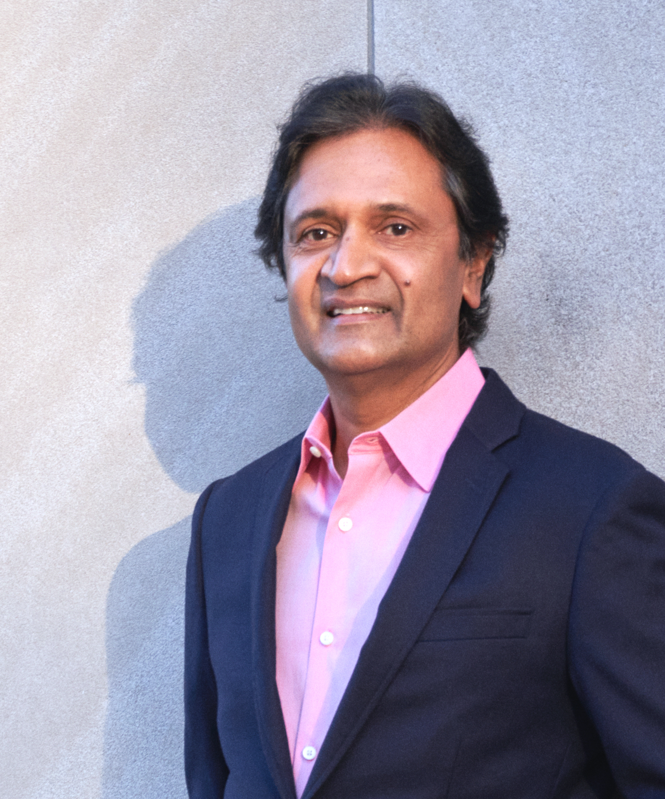
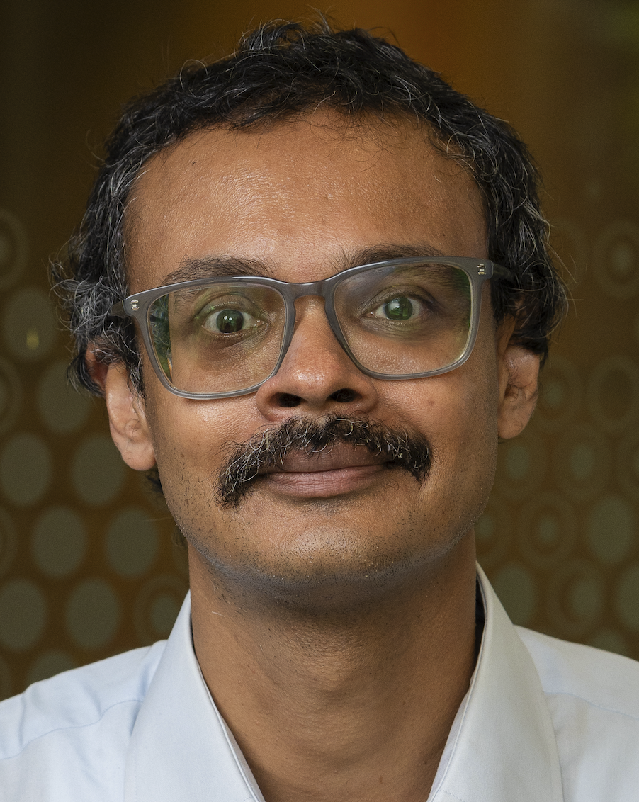
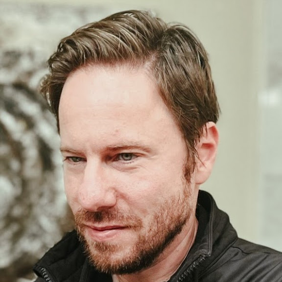
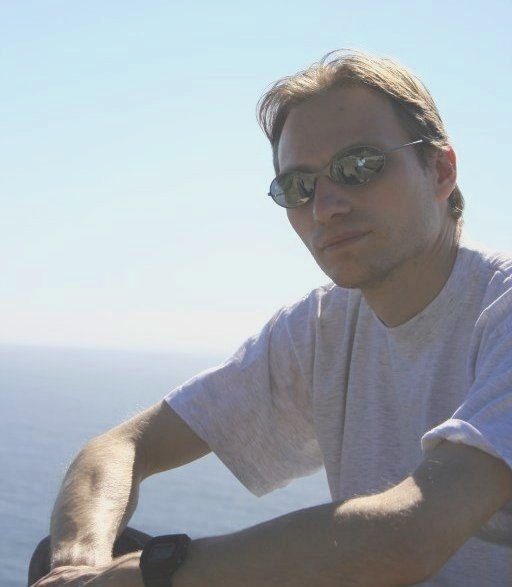
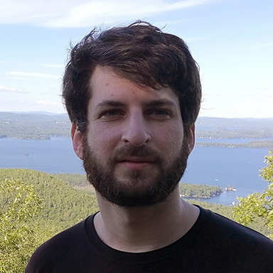
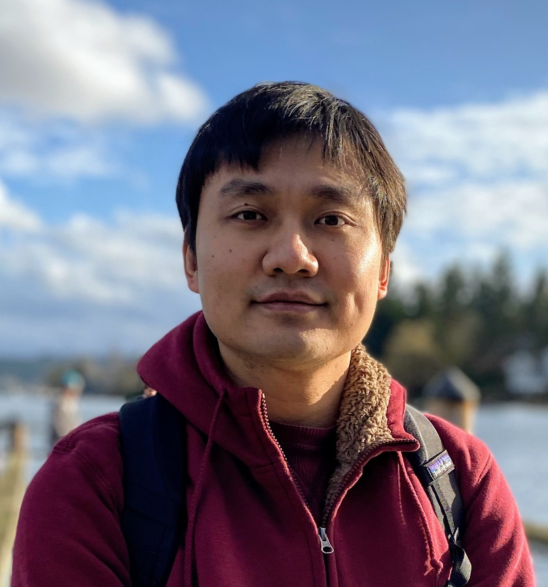
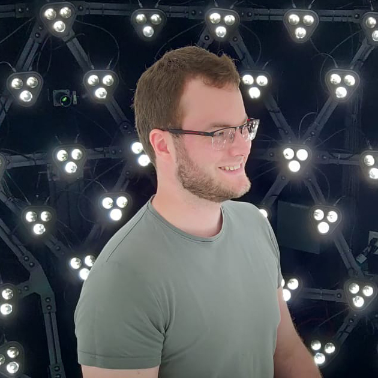
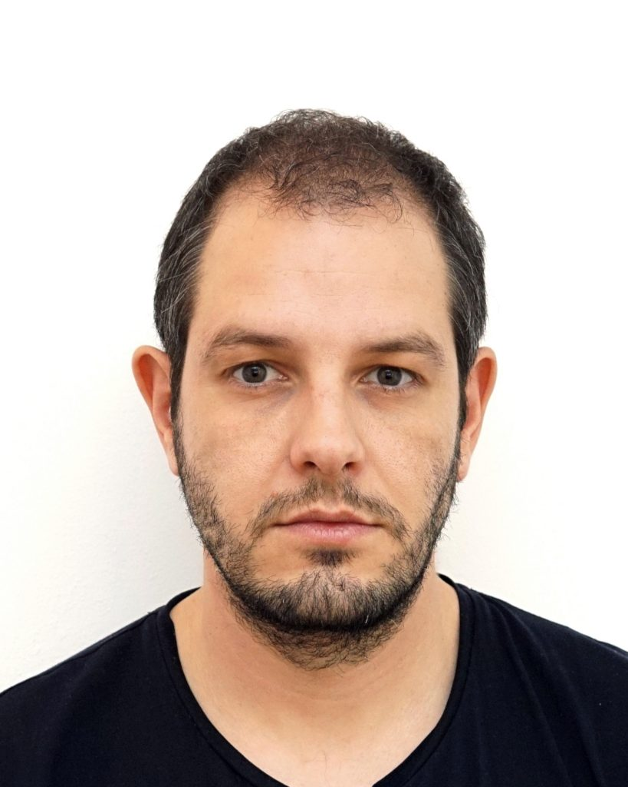
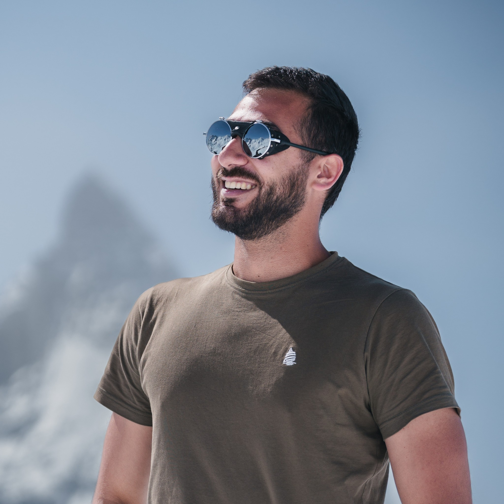

Understand appearance
Intrinsic decomposition, reflectance, and material recognition grounded in real-world signals.
CVPR 2026 Workshop
Appearance Understanding and Generation
A focused venue for vision, graphics, and generative AI researchers working on the analysis, modeling, and controllable synthesis of appearance.
Workshop Focus
Understanding and generating appearance are increasingly interdependent challenges. Shape, texture, and reflectance together define how we see the world and how models should represent it. Advances in intrinsic decomposition, material capture and recognition, and generative rendering now let us analyze and synthesize appearance with unprecedented fidelity.
Yet a key question remains: how can a deeper understanding of surface appearance support material perception and interaction, while enabling controllable, identity-preserving editing and consistent multimodal generation?
APPX brings together researchers in vision, graphics, and generative AI to explore the representations, datasets, and methods that bridge analysis and synthesis for more interpretable and controllable systems.
Intrinsic decomposition, reflectance, and material recognition grounded in real-world signals.
Inverse rendering, BRDF acquisition, and rendering-aware methods that remain faithful to physics.
Relighting, editing, and multimodal synthesis with stronger consistency and interpretability.
Call for Papers
We invite submissions of papers accepted at CVPR 2026 that fall within the scope of appearance understanding and generation. Selected papers will be presented as posters during the workshop session, with spotlight presentations for featured works.
Invited Speakers

Columbia University
Foundational contributions to computational photography and appearance modeling. Co-developer of the Oren-Nayar reflectance model.

UCSD
Leading researcher in physics-based vision and rendering. Known for light transport theory, inverse rendering, and neural radiance fields.

NVIDIA Research
Focuses on realistic material appearance, inverse material estimation, and high-resolution material synthesis.
Zhejiang University
Known for material and reflectance acquisition, SVBRDF datasets, and learning-based high-fidelity material reconstruction.

College of William & Mary
Pioneering work on multi-view material capture, relighting, appearance reproduction, and generative appearance.

Google DeepMind
Focuses on geometry-, physics-, and graphics-informed methods for understanding and synthesizing 3D scenes.

Meta Reality Labs
Expert in 3D object and scene reconstruction, differentiable rendering, and materials and lighting modeling.
Schedule
1:30 - 1:35 PM
Welcome and framing for the workshop themes.
1:35 - 2:05 PM
Computational photography and appearance modeling.
2:05 - 2:35 PM
Physics-based vision, rendering, and radiance field methods.
2:35 - 3:00 PM
Material synthesis and inverse material estimation.
3:00 - 3:40 PM
Poster presentations and informal discussion with participants.
3:40 - 4:15 PM
Featured presentations from four to five selected papers.
4:10 - 4:30 PM
Material capture, relighting, and appearance reproduction.
4:30 - 4:50 PM
SVBRDF datasets and high-fidelity material reconstruction.
4:50 - 5:10 PM
Reconstruction, differentiable rendering, and lighting models.
5:10 - 5:30 PM
Graphics-informed methods for understanding and synthesizing 3D scenes.
5:30 - 5:35 PM
Wrap-up and directions for continued discussion.
Organizers
Senior Research Scientist
Adobe Research
Senior Research Scientist
Adobe Research
Senior Research Scientist
Adobe Research
Research Scientist
Adobe ResearchResearch Scientist
Adobe Research